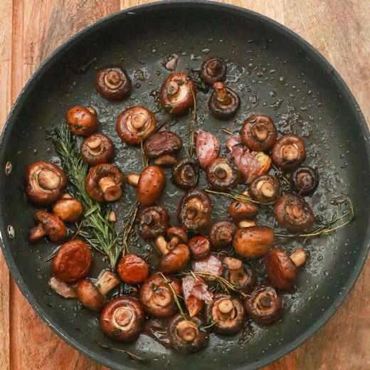

Garlic Mushrooms

Description
These garlic mushrooms are easy to make by sautéing sliced mushrooms in butter with red wine. Delicious with grilled steaks or on top of toasted bread for a tasty appetizer.
You'll find a detailed ingredient list and step-by-step instructions below.
Ingredients
- 1 tablespoon of butter;
- 2 pounds of sliced fresh mushrooms;
- 4 cloves of garlic, minced;
- 1 teaspoon of dried basil;
- 1 cup of red wine.
Steps
- Heat the butter in a skillet over medium heat;
- Add the mushrooms and garlic;
- Cook and stir in basil until mushrooms are a light golden brown and the liquid has evaporated; about 10 minutes;
- Reduce the heat to low, and pour wine into the skillet;
- Season with salt and pepper;
- Simmer until wine has mostly evaporated. Serve immediately.